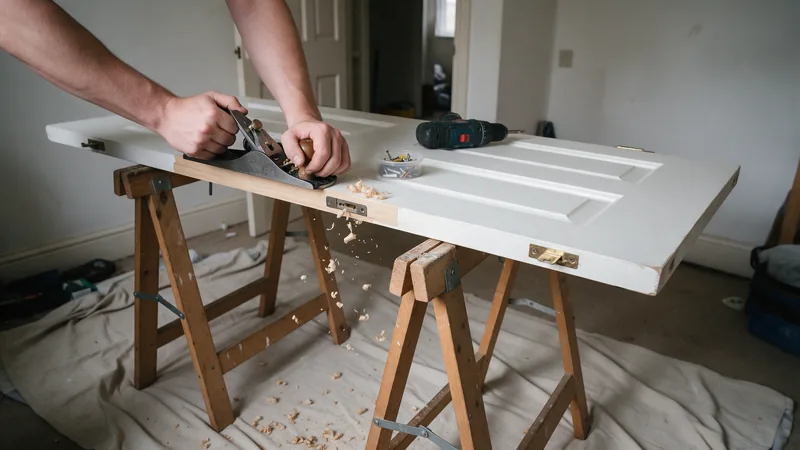

Home / Services
Services
What we take on
Six headings, and a seventh line that matters as much: the jobs we pass to somebody else. Every one of these is a job one person can do properly in a day with the right parts on board.
 Generated photo
Generated photoSmall repairs around the house
The jobs that are too small to ring anybody about and too annoying to leave. A cupboard door out of line, a handle gone loose, a hole where a shelf used to be.
What this covers Generated photo
Generated photoFlat pack assembly
Wardrobes, beds, desks and the chest of drawers that has been in the box since August. Built square, stood where you want it, and the cardboard folded up and taken out.
What this covers Generated photo
Generated photoShelves, TVs and curtain poles
Anything that has to go on a wall and stay there. We find out what the wall is made of first, because that is what decides the fixing, not the thing you are hanging.
What this covers
Generated photoDoor and lock adjustments
A door that catches on the frame, drags on the carpet or will not shut without a shoulder. Usually hinges, a swollen edge or a keep a few millimetres out.
What this covers Generated photo
Generated photoLandlord and letting repairs
A list for a property between tenants, or a repair reported by somebody who is living there now. One visit, one write up, and a note of anything that needs a specialist.
What this covers Generated photo
Generated photoGarden and fence repairs
Fence panels and posts, a gate that drops or drags, a shed roof letting water in, a loose paving slab by the back door. The outside list, done in daylight.
What this coversSmall jobs that cannot wait
Ring rather than fill a form in. Heating and electrical faults go to the right trade, today.
What counts as urgentHow it works
From a list on the fridge to a list with ticks on it
Send the list
Write down the room, the thing and what is wrong with it. Photographs help and nothing has to be in order.
We go through it
We say what we would get on with, what needs a part ordering and what we would rather you gave to another trade.
The visit
We arrive with the list, work down it, and tell you if something turns out bigger than it looked on paper.
Ticked off
Everything done gets ticked on your list, and anything we left is written down with the reason.
What is left
If there is a job for somebody else, you get a plain note of what it needs so you can ring the right trade.
The line
What goes to another trade, and why
None of this is us being careful for the sake of it. These are the jobs where doing it properly needs somebody who does nothing else.
On the list
Passed on
We will tell you which trade you want and what to ask them for. You are not left to guess at it, and the rest of your list still gets done on the day.
The visit
What a visit is, and why the list matters
Getting to you and getting set up takes the same slice of the day whichever job you have booked. Put six on the list and that slice is paid once.
One thing on the list
Six things on the list
Questions
Asked before most bookings
What jobs do you take on?
Small repairs and fitting jobs round a house: doors, locks and handles, shelves, televisions and curtain poles, flat pack, skirting and architrave, filling and patching, blinds, cat flaps, bath and shower seals, fence posts and panels, gates, shed roofs and the odd loose slab.
The rule of thumb is that if one person with a van full of tools can do it in a morning or a day, it is ours. If it needs a different trade, a scaffold or a building notice, it is not, and we will say so.
Is there a minimum job?
There is no list of jobs we are too grand for. What there is, is a minimum visit, because getting to you, parking, getting the sheets down and getting the tools in takes the same time whether we do one job or six.
So one five minute job on its own is poor value for you, not for us. That is the honest answer, and it is why we would rather you sent a list.
Can you do a list of small jobs in one visit?
Yes, and it is the way this works best. Send the list before the visit, with the room, the thing and what is wrong with it, and we will tell you what we think fits.
We work down the list in the order you put it in unless something on it has to come first. Anything we do not get to is written down with the reason, and nothing is quietly dropped.
Do you work for landlords?
Yes. Both kinds of work: a list for an empty property between tenants, and a single repair reported by somebody who is living there now.
For an occupied property we will agree the appointment with the tenant before we set off, knock rather than let ourselves in, and send you a plain write up of what was done and anything that needs a specialist.
Do you do electrics or plumbing?
No, and that is deliberate. New sockets and lighting circuits go to an electrician, anything on the heating system goes to a heating engineer, and pipework buried in a wall goes to a plumber.
What we will do is tell you which one you need and what to ask them for, so you are not guessing. Changing a tap washer or a toilet seat is a different matter and we are happy to look at that sort of thing on the day.
How quickly can you come out?
We will not print a number here, because it depends on what is already booked and how long your list looks. Ring or send the list and we will tell you the next day that actually works.
Send the list
Room, thing, what is wrong with it. That is all we need to tell you what fits.